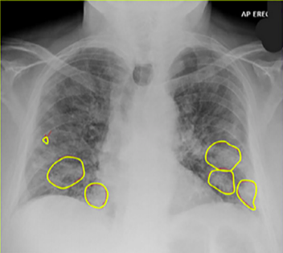

Projects & Github

NADL - Naive Automatic Differentiation Library
A small framework that can perform automatic differentiation to calculate gradients on n-dimensional numpy arrays from scratch.
This framework provides a PyTorch like interface for writing complex deep learning code.
I have also added unit tests with Travis CI so that it's performance can be monitored after every push.
It is written and maintained by me and new functionalities are added every week.

Catheter Tube Detection
This repository houses code that I used for the RANZCR CLiP Catheter Tube detection competition on Kaggle.
The aim here was the predict if a Catheter tube was placed correctly in a patient's body via chest-xrays. This problem is important as it will potentially save a lot of lives if detection if done early and with substantial precision.
In this task, we had 11 classes to classify from.
I have used the newly announed Normalization Free Neural Networks and compared their performance with Efficient Network.

Leaf Disease Classification
This is the codebase which houses a Model, DataLoader, Augmentations and a Trainer Class (all written from Scratch in PyTorch) which detects Leafs with Diseases as a part of Cassava Leaf Disease Classification Challenge on Kaggle.
Due to data imbalance, noisy labels and variable image sizes, I had to use techniques such as Pseudo-Labelling and Bi-Tempered Logistic Loss, etc to get good score in Classification.

Pneumonia Detection from Chest X-Rays
I have made a Deep Convolutional Neural Network to classify between Chest X-Rays that have Pneumonia and those that donot.
In this task, I have achieved an accuracy of 84% on highly skewed dataset with noisy labels.
Along with the classification, I have also done very detailed Exploratory Data Analysis on the dataset and extracted usefull information from that.
I have also deployed a Web App that classifies any chest-xray into one of the 2 categories.

Melanoma Cancer Detection (SIIM-ISIC Challenge)
In this project, I performed extensive Exploratory Data Analysis, and trained a deep learning model (using PyTorch) to detect Melanoma Cancer from highly-imbalanced dataset of over 100GBs of size.
The target label (Malignant) consisted of only 1.8% of the entire dataset hence K-Fold Cross Validation along with Custom Loss functions and numerous augmentations were used.

Jet Hadron Collider Data Compression using Autoencoders
This project contains a Stacked Auto Encoder made in order to compress Hadron Jet Data from 4->3 Variables. I have used a Stacked Autoencoder of 3D Latent Dimensions. This way the SAE is decompressing 4D data into 3D thus reducing the space it takes.
The Model currently performs "OK-ish" - judging from the final loss.
The Reconstruction Loss (Mean Squared error measuring the distance between original data and the reconstructed data) after 350 epochs on training closes to about 0.03
Stack Overflow Q/A Classification
For Text Classification tasks, Deep Learning methods are used most often however, Classical Machine Learning methods have an untapped potential on even the most complex task; like this one for example.
Here, I have compared various machine learning models in their performance in classifying a text string into one of the 3 types (NLP Multi-class classification problem).
View on Kaggle